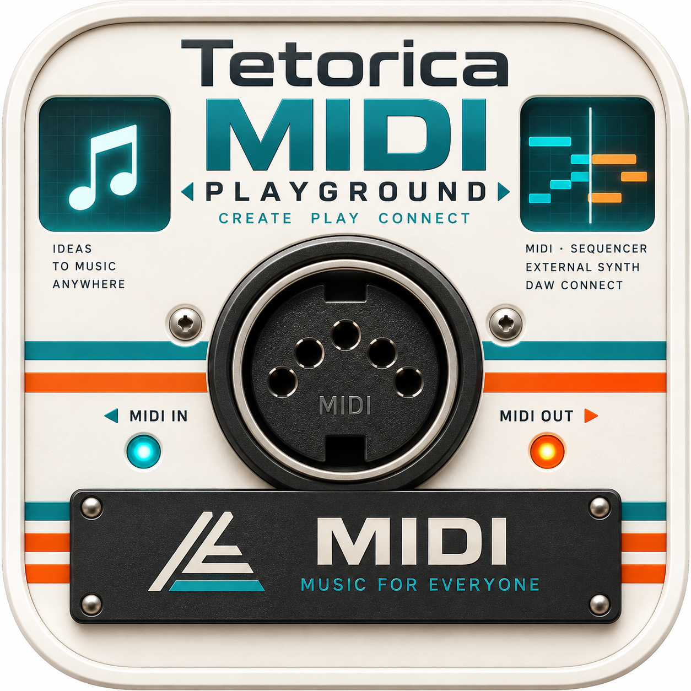
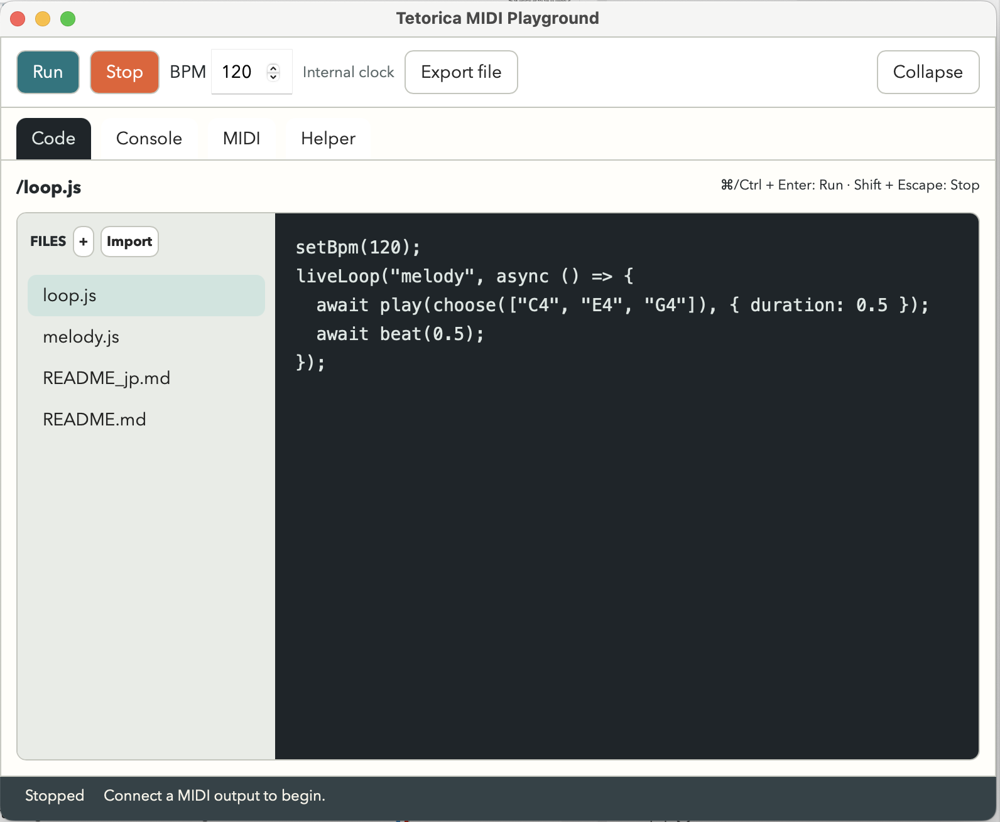

Start with a few lines.
Use familiar JavaScript with play(), beat(), and liveLoop(). Explore the included examples and English / Japanese guides.

Tetorica MIDI PlaygroundCREATE · PLAY · CONNECT
A little code. A melody. Your next idea.
Tetorica MIDI Playground connects live coding to the instruments you love.
Experimental desktop app · Choose the build for your Mac

FROM CODE TO SOUND
Write melodies, choose notes, repeat patterns, and change the tempo. Send your performance to GarageBand, another DAW, or an external MIDI instrument.
Tetorica sends MIDI; your connected instrument makes the sound. The packaged app needs no Node.js or Rust installation.
Use familiar JavaScript with play(), beat(), and liveLoop(). Explore the included examples and English / Japanese guides.
Control tempo, note duration, velocity, and MIDI channel. Run a pattern, listen, then stop and try something new.
Organize scripts in the file panel. Save locally and import or export JavaScript files to keep your experiments.
YOUR FIRST LOOP
Pick a note from C, E, and G. Play it for half a beat, rest for half a beat, then repeat.
Change the notes or the BPM and hear what happens.
setBpm(120);
liveLoop("melody", async () => {
await play(choose(["C4", "E4", "G4"]), {
duration: 0.5,
channel: 1,
velocity: 90
});
await beat(0.5);
});GET CONNECTED
Open GarageBand, create a software instrument track, and keep it selected.
Open Tetorica’s MIDI settings and select GarageBand’s virtual input if available. Otherwise, enable an IAC bus in Audio MIDI Setup and select that output. The in-app guide walks through both routes.
Test a note, choose an example as the Run file, and press Run. Press Stop to finish. Start with the internal BPM clock; external-clock features are experimental.